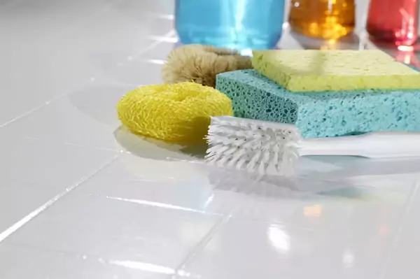

8 способов почистить швы между плиткой в ванной
Загрязнение межплиточных стыков в ванной комнате – обычное и довольно распространенное явление. Образование грязного налёта и чёрных точек на затирочных швах – результат деятельности плесневых грибков. Ни высокое качество отделки стыков мастером-плиточником, ни обработка их лучшими силиконовыми герметиками, обладающими мелкопористой структурой, не гарантируют защиту от плесени.
Дело в том, что в микроскопических впадинах и ямках со временем накапливаются частички пыли, грязи, мыла и влага, создавая идеальную среду для развития микробной среды. Поэтому если Вы следите за чистотой в своем доме и заботитесь о своём здоровье, предлагаем Вашему вниманию несколько эффективных способов очистки швов между плиткой и ванной, которые можно осуществить самостоятельно, не прибегая к помощи специалистов.
Способы очистки поверхностного загрязнения
Способ №1 – очистка швов содой.
Самый простой и не затратный способ. Для этого понадобится пачка соды пищевой, старая зубная щетка и большая щетка для чистки ванны. Далее порядок действий такой:
- намочить швы водой;
- щедро нанести соду;
- через 1-2 минуты (когда порошок намокнет) можно начинать работать активно зубной щеткой;
- взять большую щетку, обильно нанести на ее щетину соду и пройтись по всему кафелю, чтобы удалить налет;
- затем все смыть струей воды.
Особое внимание следует уделить местам, где образовались чёрные точки. Гидрокарбонат натрия является отличным антисептиком и уничтожает на 100% зародыши грибкаl
Домашнее задание 2